Under the Green: visual standard
Level 1 sets the minimum standard for readable silhouettes, worked materials and carefully placed practical light. The chapter illustrations set the underground material and narrative target. The implementation ledger determines acceptance; a reference image alone is not proof that gameplay meets the bar.
 Range before pass105: the small panel field repeats coating failure and fine grain across consecutive bays. Native2560x1600, fixed camera and light state.
Range before pass105: the small panel field repeats coating failure and fine grain across consecutive bays. Native2560x1600, fixed camera and light state.
 Range after pass105: broader grey-green paint field, unequal corrosion islands and plane-specific texture placement. Same physical pixel density, geometry, lamps and signals. This is a local material improvement; full district composition remains open.
Range after pass105: broader grey-green paint field, unequal corrosion islands and plane-specific texture placement. Same physical pixel density, geometry, lamps and signals. This is a local material improvement; full district composition remains open.
 Fresh Level1 reference: actual native2560x1440, resolution1/FOV58, matched to pass103 underground views. The outer frame is normalized for the art comparison. Study focal lighting, layered vegetation and structural silhouettes.
Fresh Level1 reference: actual native2560x1440, resolution1/FOV58, matched to pass103 underground views. The outer frame is normalized for the art comparison. Study focal lighting, layered vegetation and structural silhouettes.
 Matched underground gallery: actual native2560x1440 with HUD hidden. Vaults, fitted ribs, damaged render and supported services establish old drainage construction. Broader composition and full-route quality remain under review.
Matched underground gallery: actual native2560x1440 with HUD hidden. Vaults, fitted ribs, damaged render and supported services establish old drainage construction. Broader composition and full-route quality remain under review.
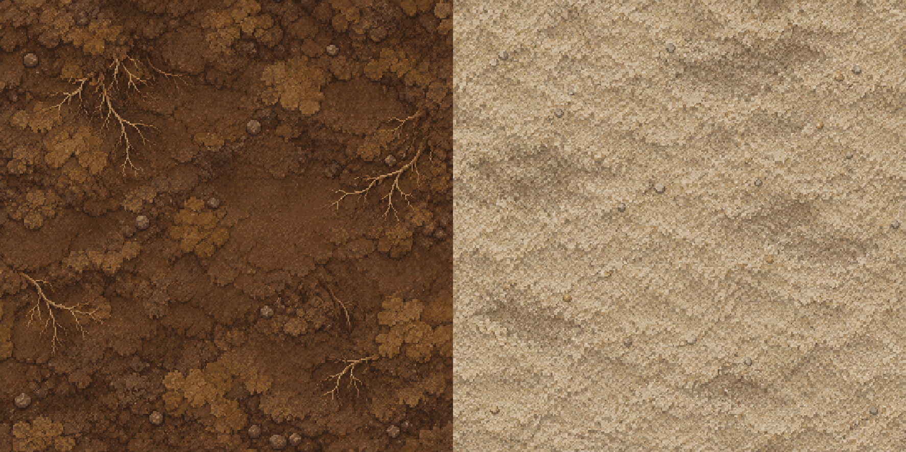
Pass104 bank material source: distinct root-bearing compacted earth and quieter bunker sand, two887px square fields. Generated using built-in image_gen; source and exact prompt saved in web/assets/under-green. Physical sampling313.5source texels/metre; independent wetness and opaque edge mixing.
 Pass104 bank in play: irregular sand lenses, mixed granular boundaries and continuous face shading replace the repeated diagonal soil pattern. Native2560x1600. Existing masonry, shoring, roots, wells and route retained; full-level gates remain pending.
Pass104 bank in play: irregular sand lenses, mixed granular boundaries and continuous face shading replace the repeated diagonal soil pattern. Native2560x1600. Existing masonry, shoring, roots, wells and route retained; full-level gates remain pending.
 Spray breakup: varied emission paths, tapered pixel droplets and rotated impact mist within the existing particle budget. Native2560x1600; motion and pressure transitions checked separately. Full-level acceptance remains open.
Spray breakup: varied emission paths, tapered pixel droplets and rotated impact mist within the existing particle budget. Native2560x1600; motion and pressure transitions checked separately. Full-level acceptance remains open.
 Pump cast supports now connect housing to feet; inset fin and skid edges catch the forward work lamp. Native2560x1600 local refinement, full-level acceptance remains open.
Pump cast supports now connect housing to feet; inset fin and skid edges catch the forward work lamp. Native2560x1600 local refinement, full-level acceptance remains open.
 Current saved Level 1 lighting reference after the requested ambient lift. Compare its material separation and focal lighting; this saved view is not a newly matched performance benchmark.
Current saved Level 1 lighting reference after the requested ambient lift. Compare its material separation and focal lighting; this saved view is not a newly matched performance benchmark.
 Current gallery: the existing warm fixture frames the dark canopy against damaged masonry and a cold crossing. Localized mud shoulders and runoff connect the wall bases to the floor. Native 2560x1600; whole-level artistic acceptance remains open.
Current gallery: the existing warm fixture frames the dark canopy against damaged masonry and a cold crossing. Localized mud shoulders and runoff connect the wall bases to the floor. Native 2560x1600; whole-level artistic acceptance remains open.
 Shallow pool at a reflective viewing angle: irregular sediment margins and sparse source-lit ripple highlights. Most paving remains dry; this is a local material improvement.
Shallow pool at a reflective viewing angle: irregular sediment margins and sparse source-lit ripple highlights. Most paving remains dry; this is a local material improvement.
 Level 1 gameplay: layered silhouettes, small warm light pools, restrained palette. Compare on the same renderer and actual target resolution.
Level 1 gameplay: layered silhouettes, small warm light pools, restrained palette. Compare on the same renderer and actual target resolution.
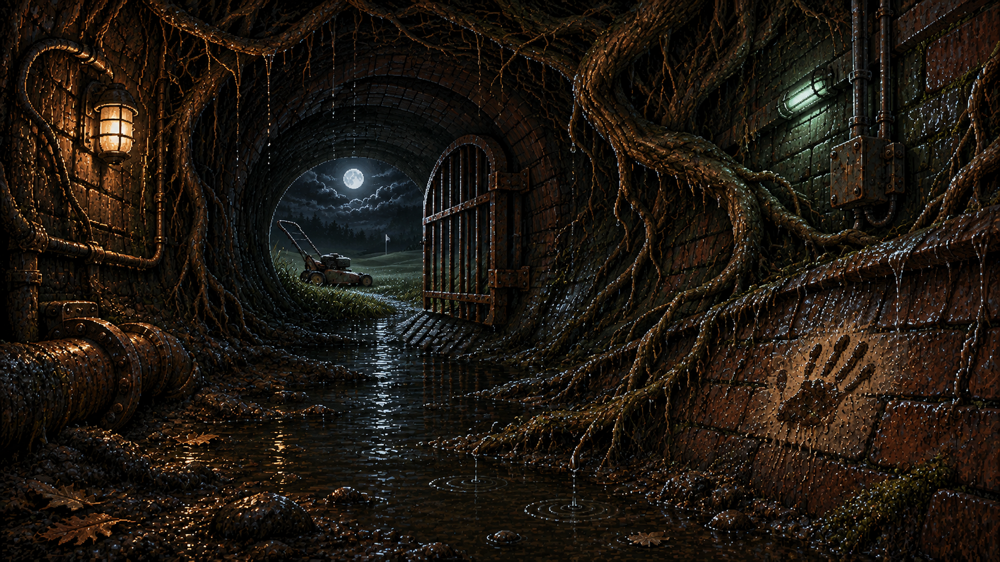
Underground target: old masonry, dense bark detail, damp sediment and purposeful warm/cold contrast.
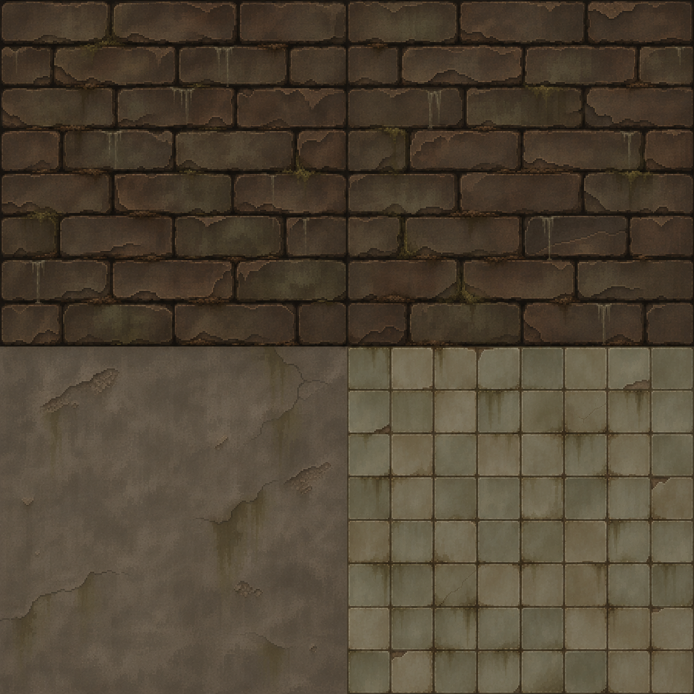
Concrete and ceramic source retained in the lower two quadrants. The old paired brick strip is superseded by the full-height masonry field. Independent wetness masks remain separate.
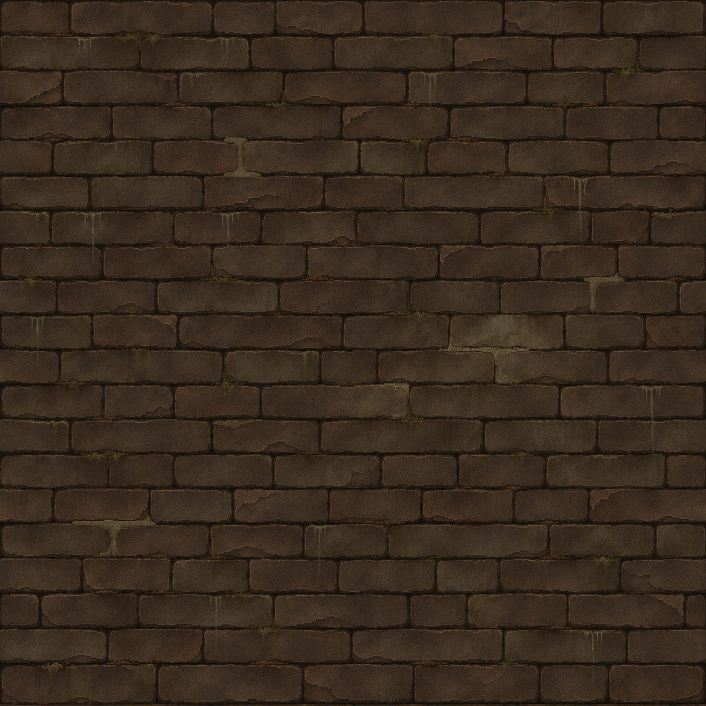
Selected four-by-four-metre masonry field: distinct mortar repairs, sparse mineral runs, varied chips and quieter intact faces. Same313.5source pixels/metre; no repeated eight-course vertical strip.
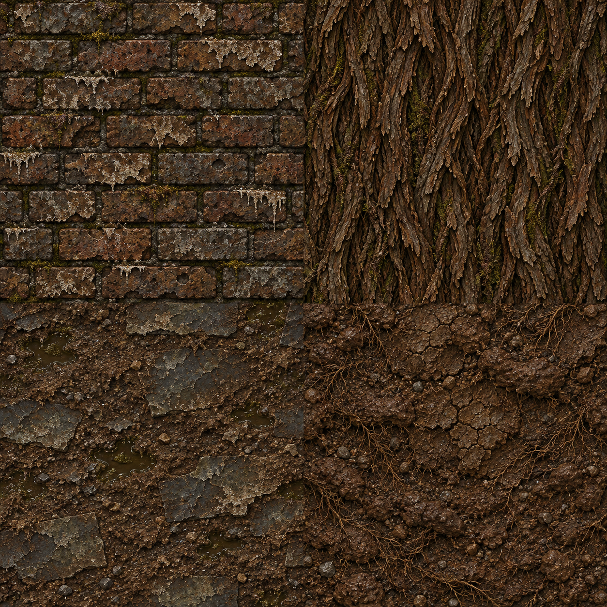
Organic source retained for bark and buried paving. Masonry and mud quadrants are superseded by dedicated fields; remaining organic surfaces still need cohesion review.
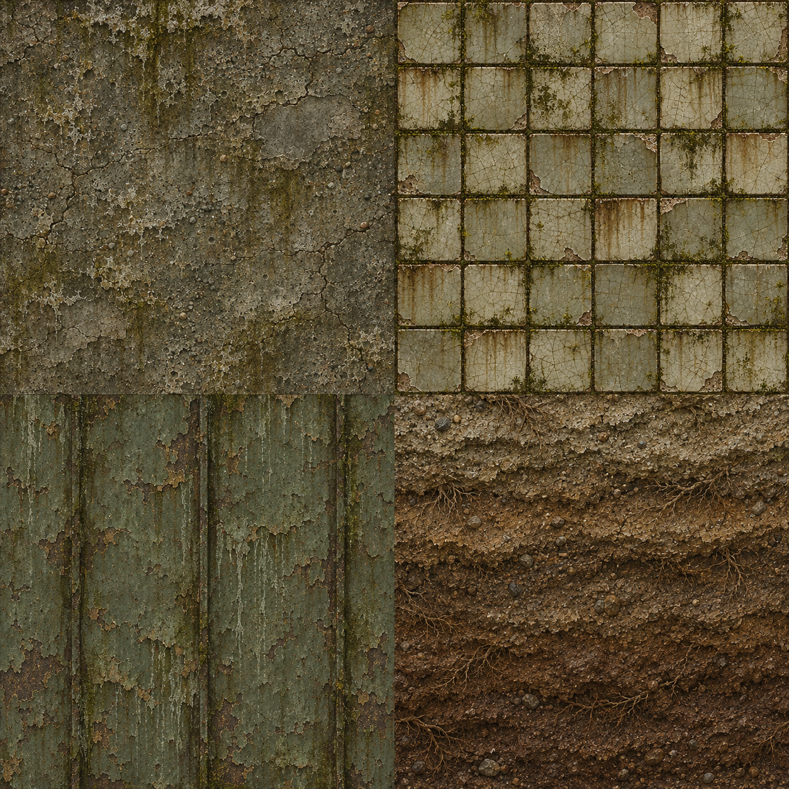
Industrial source retained for corroded steel and bunker strata. Its concrete and ceramic quadrants have been superseded. Independent wetness masks preserve material differences.
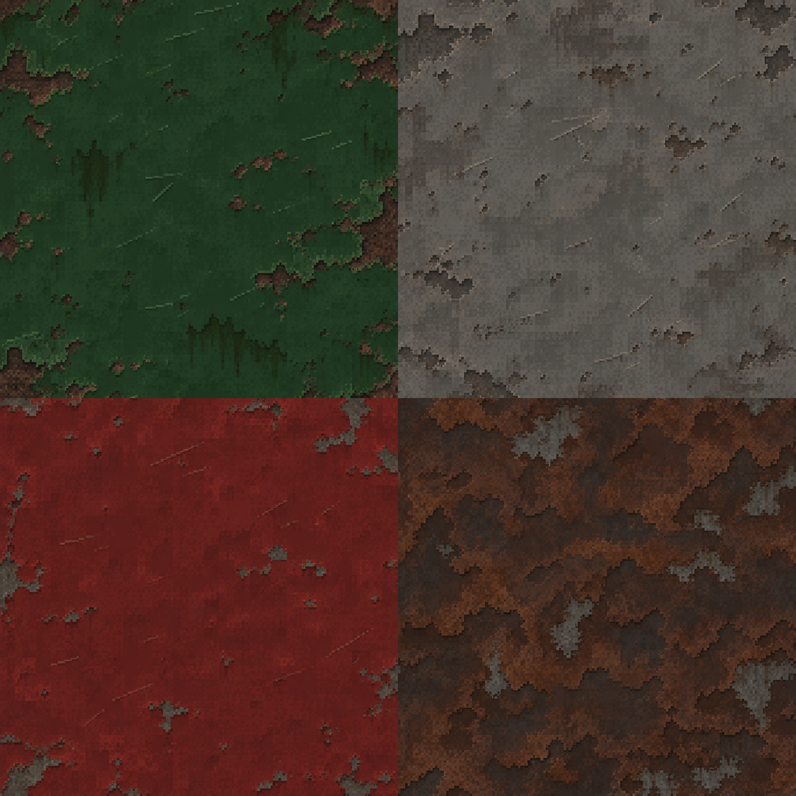
Dedicated close machinery: green enamel, bare metal, red enamel and rust, at627source pixels/metre. Shape and bolt seams come from real meshes; no wall-panel seams are painted onto castings. Shared independent damp mask; matte rust and brighter rubbed metal use different responses.
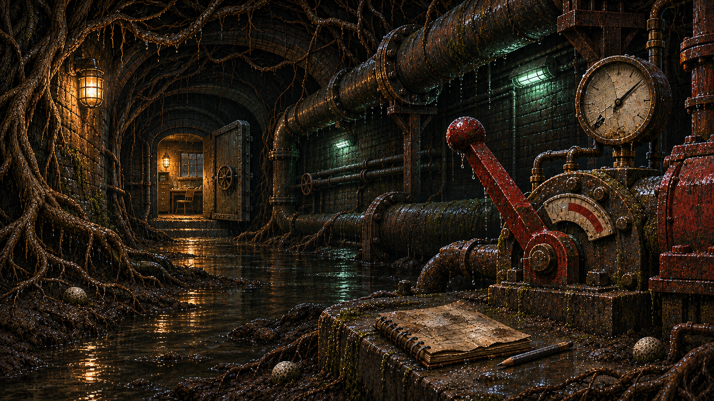
Hero-prop target: physical pipe connections, worn red control, brass gauge and a warm keeper-room focal point.
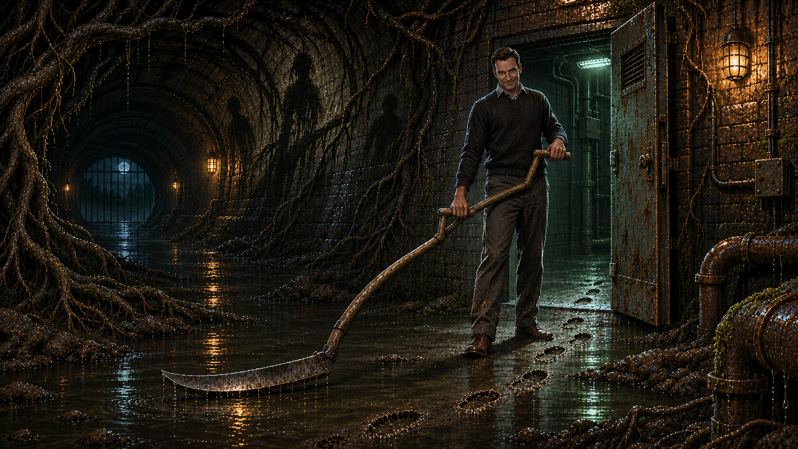
Joe target: recognizable office clothing, wooden grass scythe, thin steel blade and readable menace within the environment.
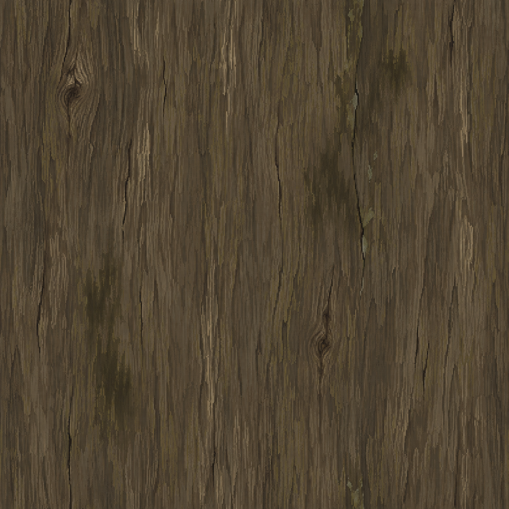
Keeper timber master: native1254square at4metres/313.5texels per metre. Longitudinal pixel fibers and sparse irregular wear replace repeated concentric knots; shared by ceiling and furniture, with independent physical joinery and matte response.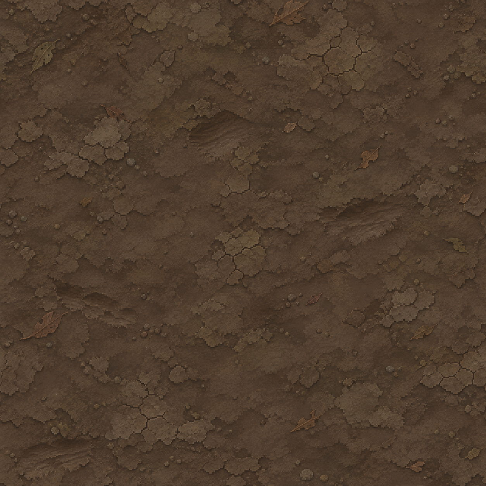
Dedicated compacted sediment: clay crust, small grit, quiet packed soil and sparse leaves. Native1254square over4metres,313.5source texels/metre; banks and floor share the physical scale. Separate wetness; no albedo-derived relief.
| Property | Standard |
|---|
| Surface scale | 313.5 source texels per metre on the architectural material masters: 627px per two-metre tile, or1254px across the four-by-four-metre masonry field. Root UVs now measure final tapered/flattened circumference; full geometry parity and density evidence is in pass29. Broader prop/actor cohesion remains open. Close machinery uses627source texels per metre; dynamic handles, cylinder caps and the keeper release share that scale. Record actual tile dimensions and world spans in renderer stats. |
| Pixels | Nearest magnification, mipmapped minification. Fine source detail and stable motion; no global blur or forced coarse pixelation. |
| Lighting | Readable near-black materials, localized wet highlights, physical practical lights and deeply shaded recesses. Essential cues survive low light and Reduced Motion. |
| Dark values | Luminance-balanced neutral fill and bounded hue-preserving shadow-detail lift. Water and transparent effects remain excluded; material colors and flank threats reviewed in pass28. |
| Construction | Overhead timber/steel knee braces join real walls; color attributes must match material flags so earth/wood do not render black. Solid volumes, grounded contact, no painted fake openings, no wall transparency at distance. Cosmetic additions respect camera, feet and scythe clearances. |
| Review views | Root gallery wide and close, bunker bank, pump, range, keeper room; front/rear/oblique plus interaction distance. 2560×1600, 1280×720, 390×844 and 844×390. |
Pass 33: distinct overhead construction
Current native 2560×1600 views: gallery masonry vault, bunker retaining timber, pump steel beams, range service steel and keeper timber lining. This establishes local V09 silhouette evidence; full Level 1 parity and material finishing remain open.
 Masonry vault and root framing in the gallery.
Masonry vault and root framing in the gallery. Earth retaining faces with timber braces in the bunker.
Earth retaining faces with timber braces in the bunker. Riveted pump beams, concrete slab and suspended service rack.
Riveted pump beams, concrete slab and suspended service rack. Raised metal seams and service supports in the range.
Raised metal seams and service supports in the range. Timber lining and retained joists above the keeper workplace.
Timber lining and retained joists above the keeper workplace.Pass 34: keeper timber material
 Ceiling grain follows each timber member at the architectural pixel scale.
Ceiling grain follows each timber member at the architectural pixel scale. The same material at close range on the keeper desk. Whole-level material finishing remains open.
The same material at close range on the keeper desk. Whole-level material finishing remains open.Pass 36: sediment material
 Close sediment bank: mineral surface separates from woody roots.
Close sediment bank: mineral surface separates from woody roots. Matching material scale in floor joints and runoff.
Matching material scale in floor joints and runoff. Middle-distance bank composition.
Middle-distance bank composition. Normal route view: sediment stays subordinate to the route and practical lights. Full Level1 parity remains open.
Normal route view: sediment stays subordinate to the route and practical lights. Full Level1 parity remains open.Pass 37: enamel lettering and fasteners
 Native lettering, bolt washers and fitted edge tabs. Weathering stays outside words.
Native lettering, bolt washers and fitted edge tabs. Weathering stays outside words. First crossing at390x844. Full-route lighting/readability acceptance remains open.
First crossing at390x844. Full-route lighting/readability acceptance remains open.Pass 38: pressed glass and fitted wiring
 Gallery fixture: shallow glass crown behind cage, restrained filament and insulated cable loop.
Gallery fixture: shallow glass crown behind cage, restrained filament and insulated cable loop. Reverse-facing keeper lamp with the same physical construction. Selective housing damage and whole-route low-light acceptance remain open.
Reverse-facing keeper lamp with the same physical construction. Selective housing damage and whole-route low-light acceptance remain open.Pass 39: selective housing histories
 Three chipped hoods, three bent edges and two riveted repairs. Nine other lamps retain intact housings; damage stays above the glass. V31 locally accepted; whole-level lighting and performance remain open.
Three chipped hoods, three bent edges and two riveted repairs. Nine other lamps retain intact housings; damage stays above the glass. V31 locally accepted; whole-level lighting and performance remain open.Pass40: low-light cue review
 Authored windup, cut and recovery while the actual light clock passes through a sampled low-light moment. No additional brightness added.
Authored windup, cut and recovery while the actual light clock passes through a sampled low-light moment. No additional brightness added. First crossing at a low-light surge phase. Signal shape and color remain distinct. Full route composition and display accessibility remain open.
First crossing at a low-light surge phase. Signal shape and color remain distinct. Full route composition and display accessibility remain open.Pass 41: sluice material and deposits
Machinery density restored to627source texels/metre. Local-UV sediment stays attached to the moving lower rail; floor deposits sit visibly beside the guide channel. Local V37 accepted; full-level coherence/performance remain open.
 Native2560x1600 closed gate: fitted guide cover, lower rail and accumulated mud.
Native2560x1600 closed gate: fitted guide cover, lower rail and accumulated mud. Raised gate and roof pocket from the approach.
Raised gate and roof pocket from the approach.Pass 42: repaired service pipework
Continuous supported runs, physical-scale metal, fitted clamps, exposed torn insulation and a swept east turn. Local physical construction improved; concentrated wetness and whole-route composition remain open.
 Retained insulation shell with an exposed corroded sector.
Retained insulation shell with an exposed corroded sector. Swept elbow and fitted joints, native2560x1600.
Swept elbow and fitted joints, native2560x1600.Pass 43: causal corrosion and wetness
Quiet aged steel separates fittings, with irregular seam corrosion and dark independently shaded wet areas at actual leaks. Existing machinery pixel maps reused; no new image textures. V38 locally accepted, full Level1/performance gates remain open.
 Gallery seam corrosion and dark weep area.
Gallery seam corrosion and dark weep area. Return line and aligned wet valve housing.
Return line and aligned wet valve housing.Pass 44: stable water highlights
Channel and puddle wave normals now follow the actual surface through camera turns and east-west channel rotation. Verified with actual GPU readback and native/software views. Shallow-pool edge readability and full water-art acceptance remain open.
 East spillway: restrained warm highlights on opaque murky water.
East spillway: restrained warm highlights on opaque murky water. Gallery pool during a camera turn. The low-contrast shallow edge still needs refinement.
Gallery pool during a camera turn. The low-contrast shallow edge still needs refinement.Pass 45: shallow shores and flood movement
Exact pool and drainage footprints with a thin translucent margin. The shallow film catches actual warm work lights while retaining the visible bed; flood lighting uses broad slow waves. Full-route water art and performance acceptance remain open.
 Pump spill: warm practical-light sheen over visible paving.
Pump spill: warm practical-light sheen over visible paving. Shallow runoff beside the opaque channel, from a collision-valid and line-clear camera.
Shallow runoff beside the opaque channel, from a collision-valid and line-clear camera.Pass 46: flood contact on real surfaces
Roots, masonry, wood and machine feet darken at the actual flood height and retain drying residue. Local V26 accepted; full water-art and performance gates remain open.
 Flooded keeper floor; elevated records remain dry.
Flooded keeper floor; elevated records remain dry. Receded pump-room flood leaves damp contact surfaces.
Receded pump-room flood leaves damp contact surfaces.Pass 47: constructed gallery vaults
Closed barrel masonry, fitted wedge stones on all nine ribs and physical elliptical texture scale. Local geometry/motion checks pass; complete architectural and Level1 parity acceptance remain open.
 Fitted gallery rib and masonry underside at native2560x1600.
Fitted gallery rib and masonry underside at native2560x1600. Wider entrance rib retains the actual gallery span.
Wider entrance rib retains the actual gallery span.Pass48: signs within the scenery
Teaching plate above the hood, asymmetric root framing, bent release conduit and a compact landscape hazard panel. These views show local readability improvements; full-route and matched Level1 acceptance remain open.
 Native gallery approach: lettering clear of hood and root knot.
Native gallery approach: lettering clear of hood and root knot. Release conduit routes below and beside the sign.
Release conduit routes below and beside the sign. Real touch layout keeps the physical bank signal clear in landscape.
Real touch layout keeps the physical bank signal clear in landscape.Pass49: embedded roots
Six entry compositions seat trunks into actual masonry or earth, with fractured courses and tapered cracks. Local V15 accepted; full Level1 and performance gates remain open.
 Keeper entry, native 2560x1600.
Keeper entry, native 2560x1600. Bunker entry seated below the actual earth-bank top.
Bunker entry seated below the actual earth-bank top.Pass50: authored practical-light roles
Warm entrance roots and machinery, colder service passages, warm keeper destination. Source, glass, glow and local air share power/color. V28 locally accepted; full Level1/performance gates remain open.
 Warm foreground roots lead toward a colder crossing.
Warm foreground roots lead toward a colder crossing. Cool range passage frames the warm keeper workplace.
Cool range passage frames the warm keeper workplace.Pass52: service iron, steel, brass, rust and red enamel now reuse the dedicated machinery art at313.5source texels/metre, retaining the original Lambert response. Paired review: output/under-green/visual-upgrade-local/pass52-hardware/. Broader material cohesion and full Level1 parity remain open.
Pass53: floor art now samples at313.5steps/metre, with mixed-width paving, restrained corner repairs and nine historical wear paths. Existing mud/sand/wetness channels remain unchanged. Final comparison: output/under-green/visual-upgrade-local/pass53-accepted/. Local V20 accepted; complete Level1 parity remains pending.
Pass106/107: sediment and paving
Thick gallery clay buries paving joins; refined stone has smaller pits and mineral clusters. Native/software local checks pass; complete scene composition and Level1 parity remain open.
 Integrated gallery deposit coverage.
Integrated gallery deposit coverage. Refined paving at native2560x1600.
Refined paving at native2560x1600.